REFLORESTA.ME
Ajude Urihi, um menino Yanomami, a trazer a Amazônia de volta: apague o fogo, plante sementes, liberte os animais e limpe os rios.
▶ Jogar agora- Grátis
- Sem cadastro
- Computador, tablet e celular
- Para crianças a partir de 6 anos
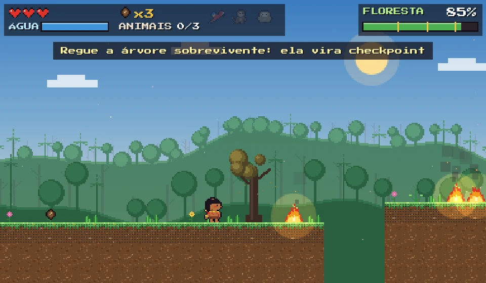
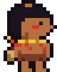
A história
O garimpo, o gado e o fogo devastaram um pedaço da floresta. Os animais perderam a casa, os rios ficaram sujos e a chuva diminuiu.
Mas ainda há sementes, igarapés e vida. Urihi decide refazer a floresta, árvore por árvore, até chegar de volta ao xapono, a grande casa do seu povo, onde todos comemoram juntos.
Como se joga
Apague o fogo
Encha a cabaça nos igarapés e jogue água nas chamas.
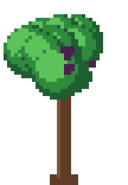
Plante
Cada castanha vira uma muda, e cada muda vira árvore. Suba nas copas para alcançar lugares altos.
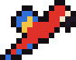
Liberte os animais
Abra as gaiolas. Cada animal acompanha Urihi e ajuda com um poder.
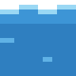
Limpe os rios
Plante árvores na beira da água suja do garimpo. A mata ciliar ajuda o rio a ficar limpo de novo.
Os animais ajudam
AraraPlanta sementes voando.
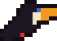
TucanoTambém planta por você.
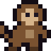
MacacoEncontra sementes.
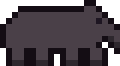
AntaA "jardineira da floresta" também acha sementes.
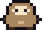
PreguiçaFaz as mudas crescerem mais rápido.
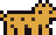
OnçaEspanta as brasas.
Veja o jogo
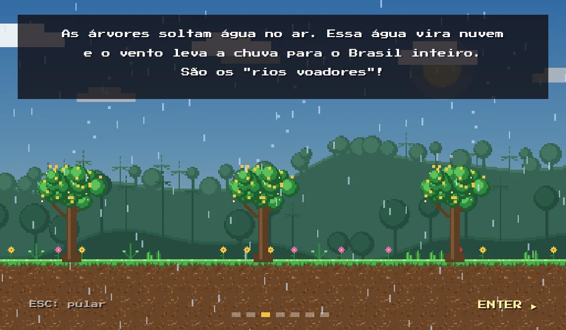
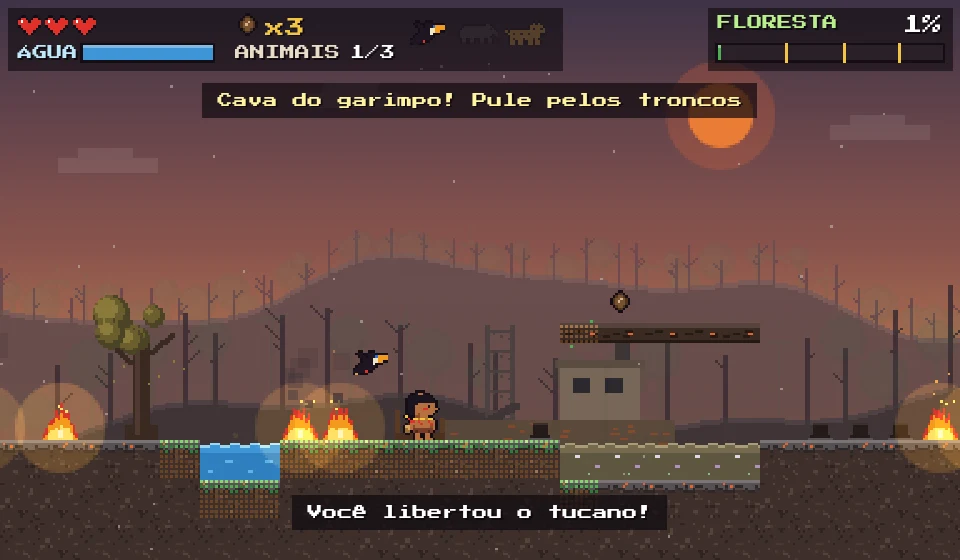
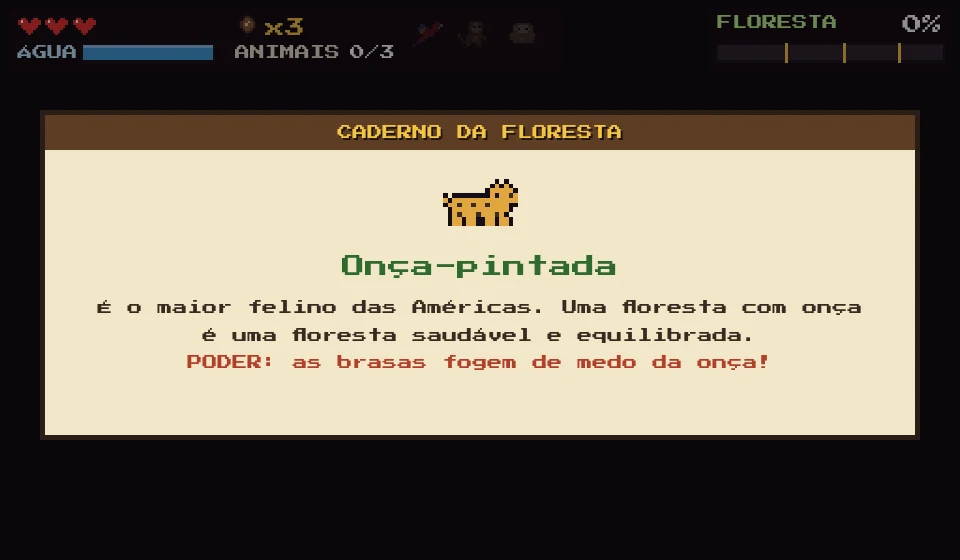
Para pais e professores
Enquanto joga, a criança descobre:
- Como as árvores fazem chover longe dali, pelos rios voadores
- Que a maior parte do fogo na Amazônia é provocada por pessoas
- Como araras, macacos e antas espalham sementes
- Por que o mercúrio do garimpo faz mal aos rios e às pessoas
- Que a mata ciliar protege os rios
- Que povos indígenas, como os Yanomami, vivem e cuidam da floresta
Os fatos aparecem em cartões curtos, que dá para ler junto com a criança. O jogo não tem anúncios nem cadastro e não coleta dados pessoais. Funciona direto no navegador, sem instalar nada.
Controles
| SETAS | andar |
| ESPAÇO / Z | pular |
| X | jogar água (segure também a seta para cima para molhar mais alto) |
| C | lançar semente |
| P | pausa |
| M | ligar ou desligar a música |
No celular e no tablet, os botões aparecem na tela. Segure o aparelho na horizontal.
Os Yanomami
Os Yanomami vivem na floresta amazônica, no norte do Brasil e no sul da Venezuela. Urihi quer dizer "terra-floresta" na língua Yanomami: a floresta como casa de todos os seres. Nos últimos anos, o garimpo ilegal envenenou rios e trouxe doenças para as comunidades.
Para saber mais: Povos Indígenas no Brasil (ISA).
Por que este jogo existe
A Amazônia é importante para o Brasil e para o mundo inteiro, e eu queria que as crianças descobrissem isso brincando. O Refloresta.me é a minha forma de levar um pouquinho desse conhecimento a crianças e jovens de todo o Brasil.
Adjamilton Junior, engenheiro de software brasileiro, apaixonado pela Amazônia · LinkedIn
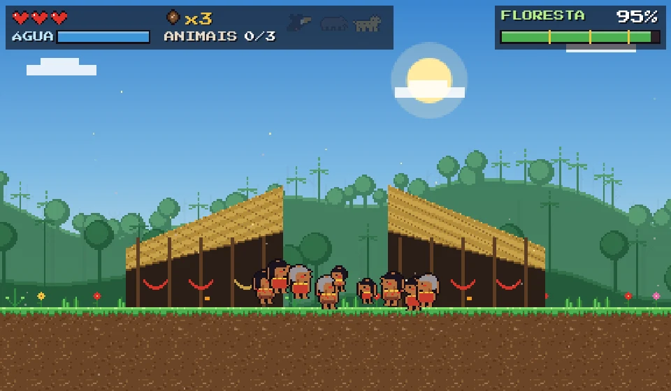
▶ Jogar agora